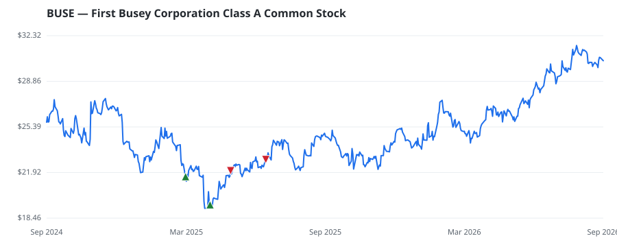

bullish · bearish · n/a — dots: price>SMA10 · SMA10>SMA50 · SMA50>SMA200 · up>down volume (20d)
Banks · mid cap
Members who bought BUSE earned a dollar-weighted +5.9% from their disclosure dates, versus +2.0% for the S&P 500 over the same holding windows (+3.9% alpha).

▲ green = a disclosed purchase · ▼ red = a disclosed sale (plotted on disclosure date)
First Busey Corporation is a financial holding company whose subsidiaries provide retail and commercial banking services, remittance processing, and offer financial products and services with banking centers in Illinois, Missouri, Florida, and Indiana. The company's operations are managed through three operating segments consisting of Banking, FirsTech, and Wealth Management. The banking segment generates a vast majority of its revenue. STATE COMMERCIAL BANKS · website
| Revenue | $719.6M | Net income | $135.3M |
|---|---|---|---|
| Operating income | $186.6M | Diluted EPS | $1.47 |
| Assets | $18.1B | Equity | $2.5B |
| Member | Chamber | Out-performer | Disclosed buys $ | Return on buys |
|---|---|---|---|---|
| Jefferson Shreve | house | — | $65K | +5.9% |
Disclosed $ figures are bracket midpoints — filings report ranges (e.g. $1,001–$15,000), not exact amounts.